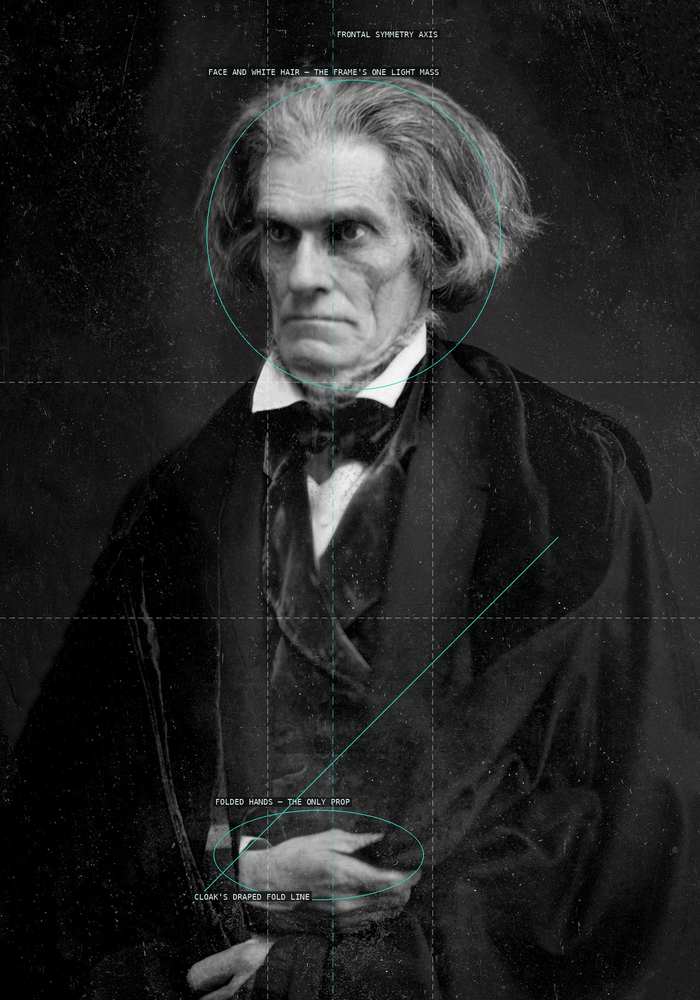
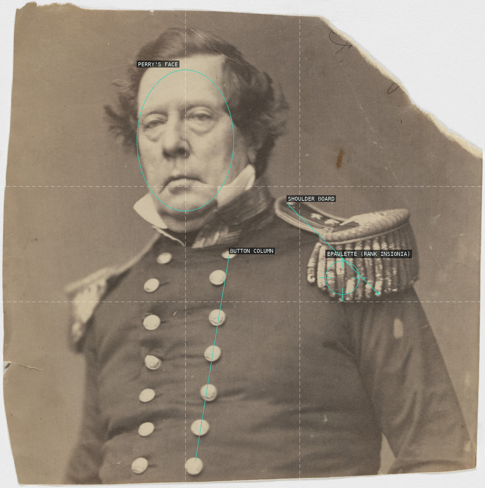
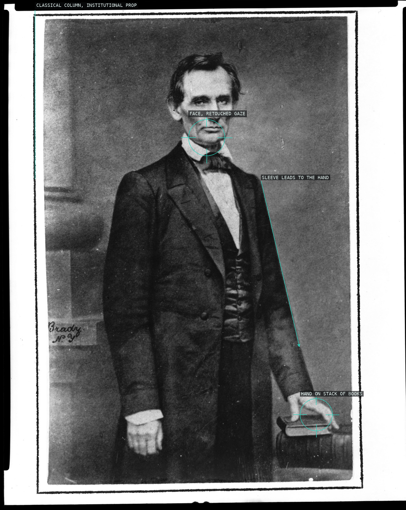
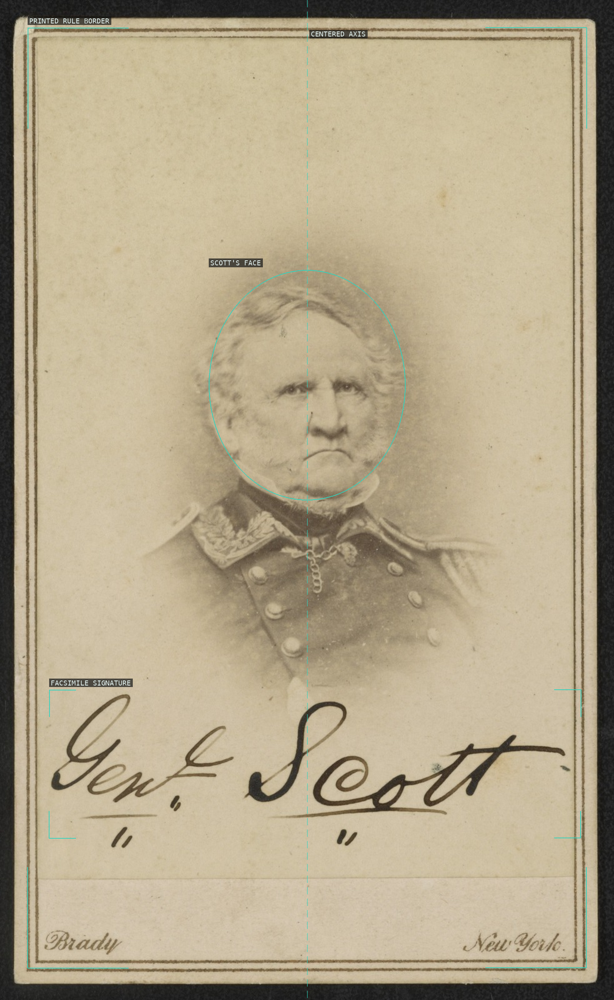
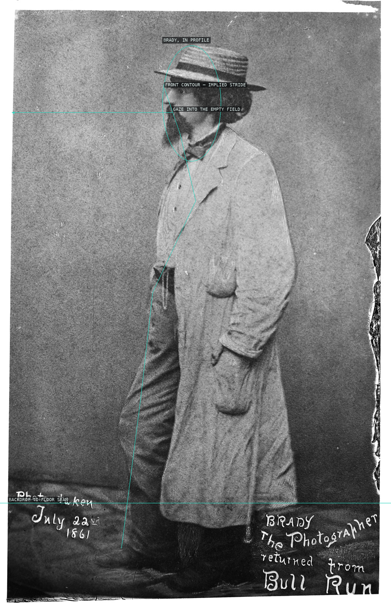
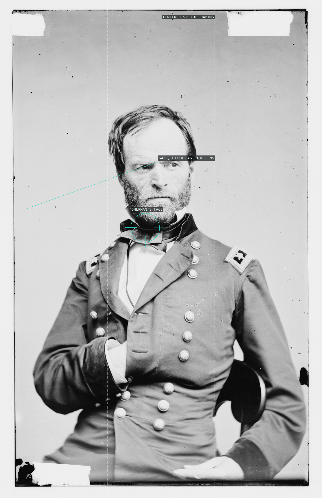
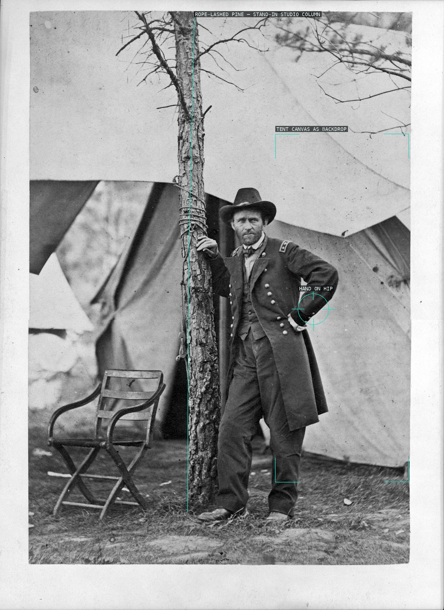
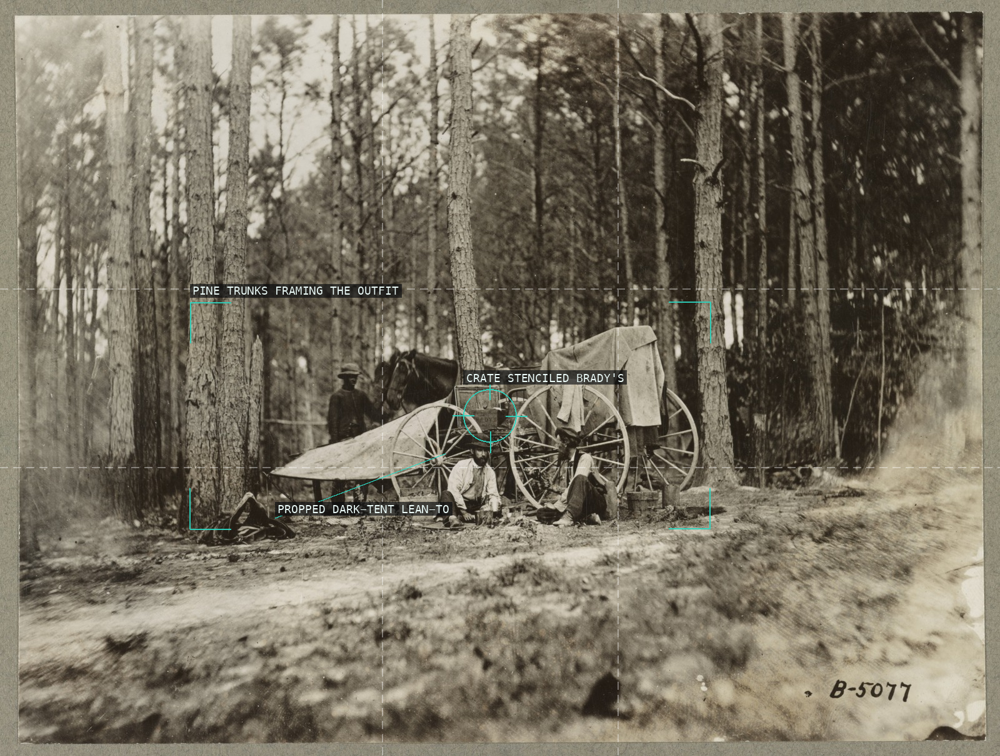
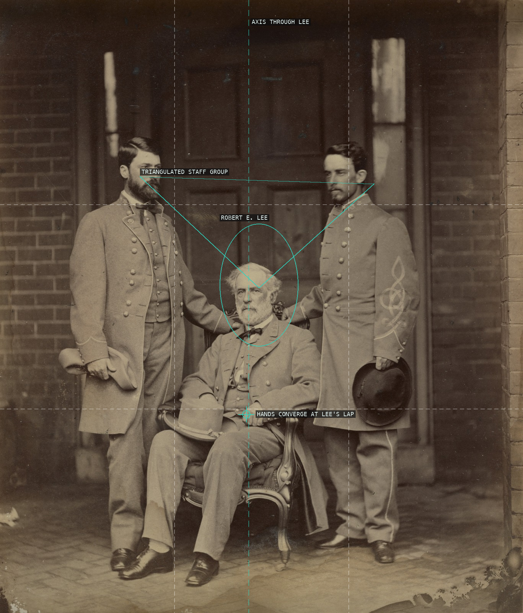

A daguerreotype built from stillness: the head's pale mass and the folded hands, its only prop, sit on a symmetrical frontal axis while a single cloak fold cuts the dark field.

Face and epaulette split the golden-section verticals -- Brady's studio formula reads likeness and naval rank as equal anchors, squared by the double button row.

Brady's standard campaign formula: a steadied gaze, an arm that carries the eye down to the hand resting on law books, staged beside a classical column for institutional weight.

A mass-produced wartime CDV: bust portrait, printed signature caption, and rule border all locked to one centered axis -- the studio formula, not a composed scene.

The house frontal-and-prop formula drops away when Brady turns the camera on himself: no column or book-stack, just a plain grounded field and a profile caught mid-stride, gaze cutting into the empty space he'd normally fill with a sitter.

Brady's symmetric, centered bust-portrait formula holds the studio grammar steady while Whitman's eyes break it, gazing past the lens rather than into it.

Brady's standardized bust-portrait formula holds Sherman dead-center and frontal, the same rig used on Grant, Lee, and Scott, but his gaze breaks off past the lens rather than meeting it.

A studio portrait relocated to a working camp: rope-bound pine substitutes for a column and tent canvas for a backdrop, while Grant's hand-on-hip pose still performs Brady's indoor grammar outdoors.

The darkroom wagon becomes the subject only once you find the crate stenciled BRADY'S at its center, framed by a proscenium of pine trunks with an improvised lean-to tent proving the scene unposed.

Lee seated at the apex of a triangle formed by his flanking aides' heads, their resting hands converging back down on him.